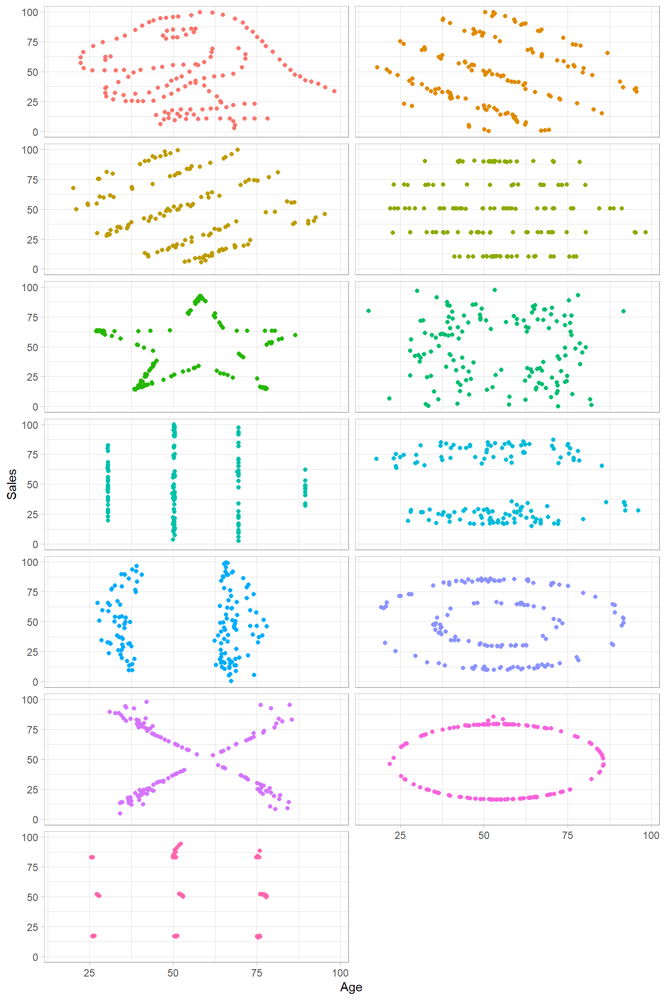
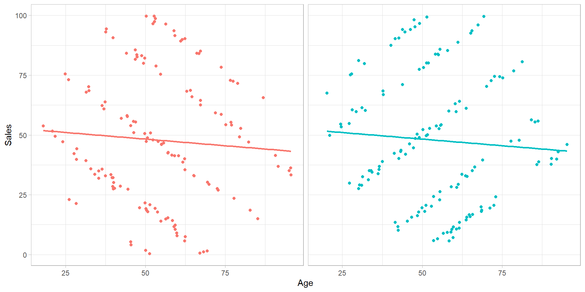
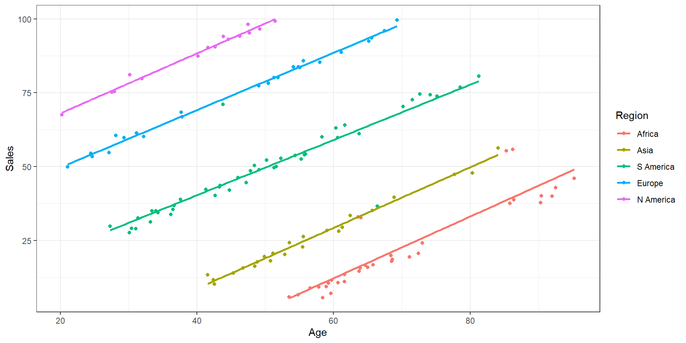

MPDM Guest Lecture
Seb Bate
Intro

Who am I?
- Medical Statistician at Manchester hospitals
- Data visualisation hobbyist
What are we doing today?
Menti
Guess the data
Infographics
Simpson’s paradox
Warm up activity
Pick a digital touchpoint that you have hit in the last 24h
Now think about the hundreds, thousands, millions of hits that your touchpoint has received
What data has been collected?
What data can be analysed and how would you analyse it?
What actions could you take as a marketeer?
Some bits of data are better quality than others
Feel free to work quietly in small groups
E.g. Buying a coffee on the Caffe Nero app
- Time/date
- Location
- Order
- Addons
- Payment method
- Vouchers used
- Click-and-collect or pay at counter
- Sit in or takeaway
- Cart abandonment
Actions that can be taken?
- Giving vouchers for lapsed customers
- More prominent up sell if I never get add-ons
- Push notification if there is a quieter shop nearby
Guess the data
Some best practice
Infographics
- Infographics are more editorialized plots (or combination of plots), often featuring more text and selective labels.
- Some are more data driven than others
- Most people don’t like being told what to think and like to draw their own conclusion
- But this is where you are able to tell the story and at the end make a call to action
- Always be critical


Some interesting data
I think I have seen something like this before?
You may have seen Anscombe’s Quartet yesterday
Anscombe’s Quartet (Anscombe, 1973) image from Wiki (Wikipedia contributors, 2025)
But we can actually extend this idea to a much larger dataset
In all of these they have the same properties
- N: 142
- Mean Age: 54.26
- Mean Sales: 47.83
- SD Age: 16.76
- SD Sales: 26.93
- Correlation: -0.06
- Adapted from Gillespie et al. (2025)
Simpson’s Paradox

What do we notice here?
These are dataset 2 and 3 from the previous slide
But what happens if we now add labels to the data?
Dataset 2
Our dataset Age Sales Region
1 95.59342 33.23413 Europe
2 66.74819 84.00483 N America
3 49.93675 21.59010 Asia
4 69.45986 30.19703 S America
5 55.74124 46.65358 S America
6 32.96070 35.82311 Asia
7 51.48771 20.84361 Asia
8 59.23649 91.48110 N America
9 31.49703 67.91256 S America
10 62.29264 40.02953 S America[1] "Africa" "Asia" "S America" "Europe" "N America"and similarly for dataset 3
and similarly for dataset 3
- This is what we call Simpson’s Paradox (Simpson, 1951; Kievit et al., 2013).
- It is when the direction of the correlation changes when we look at each subgroup

Crimes against data: a quiz
Make sure that your inputs make sense
Don’t truncate your y-axis on a bar chart
Make your bars proportional
Good should be at the top!!
If there is a sensible colour available, use it and use consistently
Are your samples representative?
This is just cursed
Thank you
Any questions?
References
Anscombe, F.J. (1973) “Graphs in statistical analysis,” The American Statistician, 27(1), pp. 17–21. Available at: https://doi.org/10.2307/2682899.
Gillespie, C. et al. (2025) datasauRus: Datasets from the datasaurus dozen. Available at: https://github.com/jumpingrivers/datasauRus.
Kievit, R. et al. (2013) “Simpson’s paradox in psychological science: A practical guide,” Frontiers in Psychology, 4. Available at: https://doi.org/10.3389/fpsyg.2013.00513.
Simpson, E.H. (1951) “The interpretation of interaction in contingency tables,” Journal of the Royal Statistical Society: Series B (Methodological), 13(2), pp. 238–241. Available at: https://doi.org/10.1111/j.2517-6161.1951.tb00088.x.
Wikipedia contributors (2025) Anscombe’s quartet. https://en.wikipedia.org/wiki/Anscombe%27s_quartet.